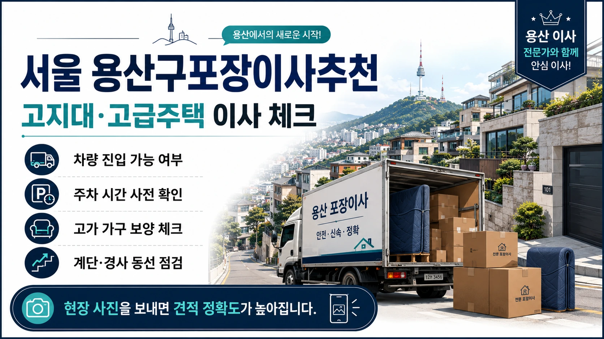
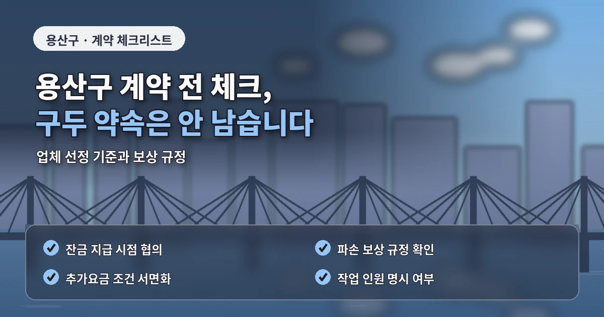

서울 용산구포장이사추천 고지대 견적 체크
용산구 포장이사는
고지대 주거지와 고급 주택,
빌라와 아파트가 함께 있어
견적 전 현장 조건을 세밀하게 확인해야 합니다.
한남동은 고급 주택과 빌라,
이태원동은 경사와 골목이 있는 주거지,
효창동과 원효로는 아파트와 오래된 주택이 섞여 있습니다.

용산구 포장이사 비용은
짐의 양만으로 결정되지 않습니다.
견적을 바꾸는 현장 조건
차량이 건물 앞까지 들어갈 수 있는지,
언덕길 운반이 필요한지,
계단 폭이 충분한지,
대형가구를 분해해야 하는지,
주차 제한이 있는지에 따라
전체 견적이 달라질 수 있습니다.
한남동이나 이태원동 일부 주거지는
도로 폭이 좁거나 경사가 있는 경우가 있습니다.
작업 차량이 가까이 접근하지 못하면
짐을 옮기는 거리가 길어지고
인력과 시간이 더 필요할 수 있습니다.
이런 조건은 상담 단계에서 반드시 전달해야 합니다.
고급 주택이나 수입 가구가 있는 경우에는
포장 방식도 중요합니다.
업체 비교 전 살펴볼 기준
원목 가구,
대형 TV,
유리 장식장,
고가 가전,
피아노 같은 물건은
일반 박스 포장만으로는 부족할 수 있습니다.
업체가 어떤 보호 자재를 쓰는지,
운반 전 상태 확인을 어떻게 하는지,
파손 보상 기준이 있는지 확인해야 합니다.
용산구 포장이사 업체추천을 볼 때는
가격보다 작업 범위와 보호 기준을 먼저 봐야 합니다.
저렴한곳이라는 이유만으로 선택하면
고가 물품이 많은 집에서는
오히려 위험 부담이 커질 수 있습니다.
견적서에는
작업 인원,
차량 대수,
포장재,
보양 범위,
분해 조립,
특수 물품 운반,
추가비 기준이 명확히 들어가야 합니다.
포장이사 비교견적은
모든 업체에 같은 조건으로 문의해야 합니다.

추가비용을 줄이는 준비 방법
출발지와 도착지의 층수,
차량 진입 가능 여부,
주차 위치,
사다리차 가능 공간,
대형가구와 가전 목록,
분해가 필요한 물건을
동일하게 알려야 실제 비교가 가능합니다.
용산구는 외국인 거주 수요도 있는 지역이라
짐의 종류가 일반 가정과 다를 수 있습니다.
수입 가구,
대형 러그,
특수 조명,
해외 가전이 있다면
상담 때 별도로 설명하는 것이 좋습니다.
추가비용을 줄이려면
가져갈 짐과 보관할 짐,
버릴 물건을 미리 구분해야 합니다.
고지대나 골목 운반이 필요한 경우에는
짐의 양이 작업 시간에 직접 영향을 줍니다.
계약 전에는
취소 규정과 일정 변경 조건도 확인해야 합니다.
계약 전에 확인할 세부 항목
용산구처럼 주차와 도로 조건이 까다로운 지역은
작업 시간이 예상보다 길어질 수 있으므로
예약 시간에 여유를 두는 것이 좋습니다.
용산구 포장이사는
고지대, 골목, 고급 물품 보호를 함께 고려해야
현실적인 견적을 받을 수 있습니다.
도착지 배치 계획도 중요합니다.
고급 가구나 대형 가전은
한 번 놓은 뒤 다시 옮기면
바닥과 벽면 손상 위험이 커질 수 있습니다.
큰 가구 위치와 가전 연결 자리를 미리 정하면
작업 시간을 줄이고 물건 보호에도 도움이 됩니다.
또한 용산구는 주차 단속이나 도로 혼잡이 있는 구간이 있어
차량 대기 가능 시간을 사전에 확인하는 것이 안전합니다.
건물 관리인이나 경비실이 있다면
이사 당일 차량 위치와 작업 시작 시간을 함께 공유해두는 것이 좋습니다.
이 작은 준비가 용산구 포장이사 견적 오차와 현장 혼선을 줄이는 데 도움이 됩니다.
용산구 포장이사에서는 건물별 출입 규정도 함께 확인해야 합니다.
고급 주택이나 빌라 단지는 외부 차량 출입을 제한하거나
작업 가능 시간을 따로 정해두는 경우가 있습니다.
업체가 도착한 뒤 출입 절차를 진행하면 작업 시작이 늦어질 수 있으므로
관리인이나 경비실과 미리 시간을 맞춰두는 것이 좋습니다.
또한 고지대 주거지는 날씨에 따라 작업 난이도가 달라질 수 있습니다.
비가 오거나 바닥이 미끄러운 날에는 무거운 가구 운반 속도가 느려지고
보양 자재 사용도 더 필요할 수 있습니다.
견적 단계에서 우천 시 작업 기준까지 확인하면 일정 관리가 더 안정적입니다.
용산구 포장이사 견적은 작업 전 정보가 자세할수록 정확해집니다.
고가 물품, 도로 폭, 주차 가능 시간, 계단 구조를 나누어 전달하면
업체가 보호 방식과 인력 배치를 더 현실적으로 정할 수 있습니다.
이 기준을 맞춰 비교하면 업체별 금액 차이도 더 명확하게 보입니다.
견적 전 사진 자료를 함께 보내면 더 정확합니다.
자주 묻는 질문
A. 차량 접근이 어렵거나 운반 거리가 길면 작업 인원과 시간이 늘어날 수 있습니다.
A. 보호 자재, 운반 방식, 파손 보상 기준을 견적 단계에서 확인해야 합니다.
A. 골목 폭과 계단 구조를 사진으로 전달하면 견적 정확도를 높일 수 있습니다.